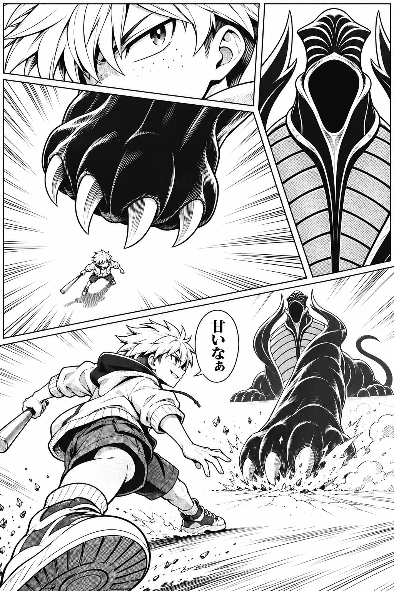
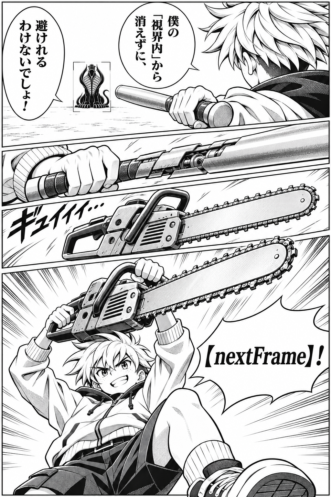
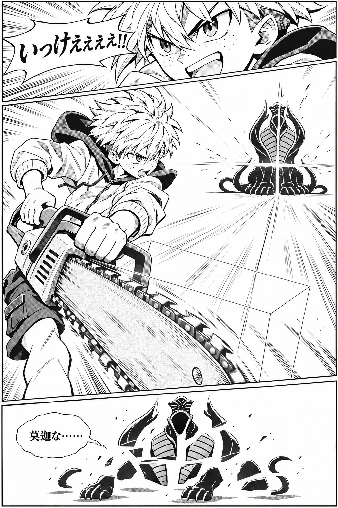
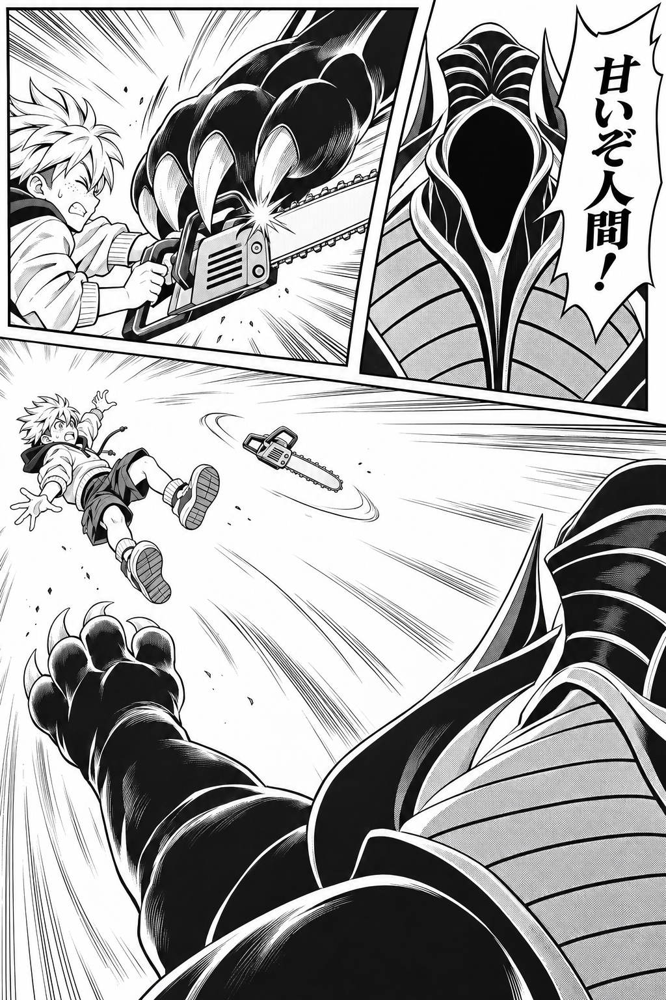

<!doctype html><html lang="ja"><meta charset="utf-8"><meta name="viewport" content="width=device-width,initial-scale=1"><title>漫画リーチ 構図改訂</title><style>body{margin:0;background:#202329;color:white;font:18px sans-serif}main{max-width:900px;margin:auto;padding:24px}h1{font-size:26px}figure{margin:28px 0 60px}img{width:100%;display:block}figcaption{margin:12px 0}a{color:#aee0ff}</style><main><h1>漫画リーチ：構図・コマ割り改訂</h1><p>右から左に読みます。共通2ページ＋成功／失敗の分岐。画像クリックで原寸。</p><figure><figcaption>②〜④：威圧・襲撃・回避</figcaption><a href="page-01-assault-v02.png"></a></figure><figure><figcaption>⑤〜⑦：狙い・変化・振り上げ</figcaption><a href="page-02-counter-v02.png"></a></figure><figure><figcaption>⑧：成功</figcaption><a href="page-03-success-v02.png"></a></figure><figure><figcaption>⑧：失敗</figcaption><a href="page-04-failure-v02.png"></a></figure></main></html>
